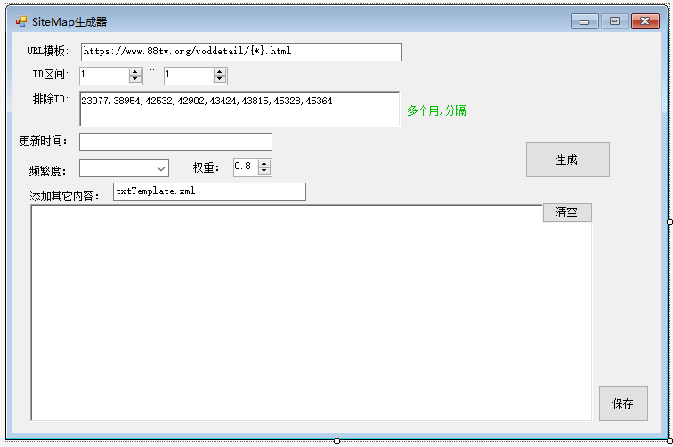

今天用了两个小时, 为无限影视（https://www.88tv.org）开发了一个小工具， 用来生成baidu的sitemap。 方便用。
因为该电影站的视频内容详情网页的ID是自增长的，所以可以按顺序快速生成。 不用再写爬虫去一个一个链接爬了。
1. 输入URL模板， 注意{*}， 这个是用来放ID的。
2. ID区间，要生成多少到多少的页面链接。
3. 排除ID： 排除这些ID。
4. 更新时间, 这是sitemap中的结构， 一般指该页面的更新时间。 频繁度=更新频繁度，
5. 这工具加入了其它内容， 方便整理视频栏目， 首页及其它页面的内容。
这个工具不用读数据库， 不用爬网站， 只要你的网站内容ID有规律就能用。
示例附件下载在末尾。
预览图：

事件代码：
Common.PageInfo pg;
if (cbChangefreq.Text == "")
{
MessageBox.Show("没有选择更新频率.");
return;
}
List<Common.PageInfo> list = new List<Common.PageInfo>();
for (int i = (int)NuDMin.Value; i < NudMax.Value; i++)
{
if (((System.Collections.IList)rbtPC.Text.Split(',')).Contains(i.ToString()))
{
continue;
}
pg = new Common.PageInfo();
pg.loc = txtUrl.Text.Trim().Replace("{*}", i.ToString());
pg.lastmod = txtUpdateDate.Text;
pg.priority = nudPriority.Value.ToString();
pg.changefreq = cbChangefreq.SelectedItem.ToString();
list.Add(pg);
}
siteMap.url = list;
string mySitemapStr = siteMap.GenerateSiteMapString(Application.StartupPath + "\\" + txtTemplate.Text.Trim());
rtbTxt.Text = mySitemapStr;
辅助类：
using System;
using System.Collections.Generic;
using System.Text;
namespace Common
{
using System;
using System.Collections.Generic;
using System.IO;
using System.Linq;
using System.Text;
/// <summary>
/// 生成站点地图sitemap
/// </summary>
public class SiteMap
{
public List<PageInfo> url
{
get;
set;
}
/// <summary>
/// 生成SiteMap字符串
/// </summary>
/// <returns></returns>
public string GenerateSiteMapString(string file = "")
{
StringBuilder sb = new StringBuilder();
sb.AppendLine("<?xml version=\"1.0\" encoding=\"UTF-8\"?>");
sb.AppendLine("<urlset>");
string text = "";
#region MyRegion
if (!string.IsNullOrWhiteSpace(file))
{
text = System.IO.File.ReadAllText(file);
}
sb.AppendLine(text);
#endregion
foreach (PageInfo pi in url)
{
sb.AppendLine("<url>");
sb.AppendLine(string.Format("<loc>{0}</loc>", pi.loc));
sb.AppendLine(string.Format("<lastmod>{0}</lastmod>", pi.lastmod));
sb.AppendLine(string.Format("<changefreq>{0}</changefreq>", pi.changefreq));
sb.AppendLine(string.Format("<priority>{0}</priority>", pi.priority));
sb.AppendLine("</url>");
}
sb.AppendLine("</urlset>");
return sb.ToString();
}
/// <summary>
/// 保存Site文件
/// </summary>
/// <param name="FilePath">路径</param>
public void SaveSiteMap(string FilePath, string content)
{
using (StreamWriter m_streamWriter = new StreamWriter(FilePath, false, Encoding.UTF8))
{
m_streamWriter.Flush();
m_streamWriter.BaseStream.Seek(0, SeekOrigin.Begin);
m_streamWriter.Write(content);
}
}
}
public class PageInfo
{
/// <summary>
/// 网址
/// </summary>
public string loc { get; set; }
/// <summary>
/// 最后更新时间
/// </summary>
public string lastmod { get; set; }
/// <summary>
/// 更新频繁程度
/// </summary>
public string changefreq { get; set; }
/// <summary>
/// 优先级，0-1
/// </summary>
public string priority { get; set; }
}
}
下载：https://files.cnblogs.com/files/jackrebel/BaiduSiteMap.zip
非常简单的源代码。